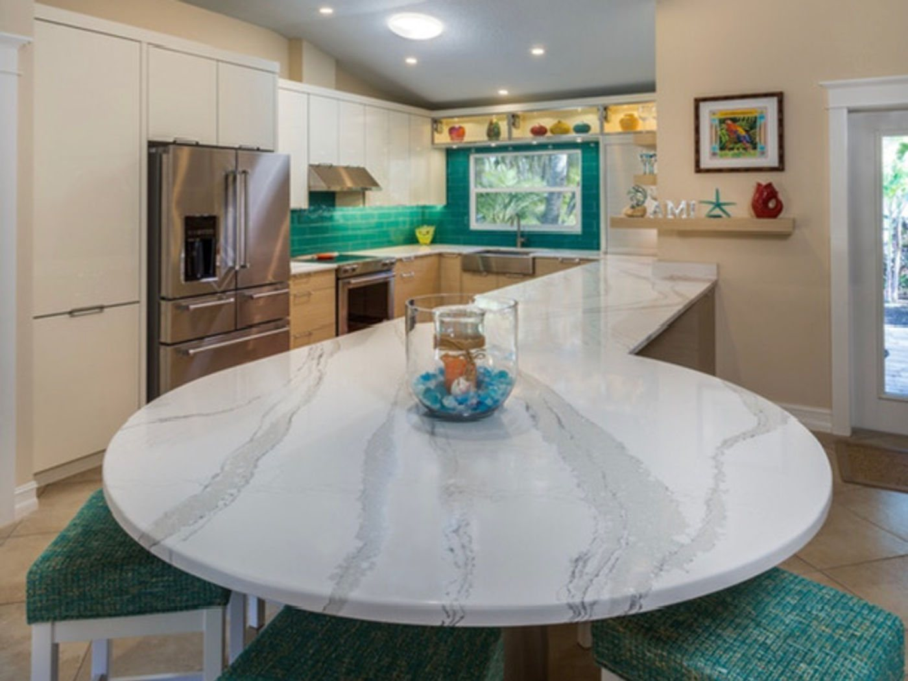
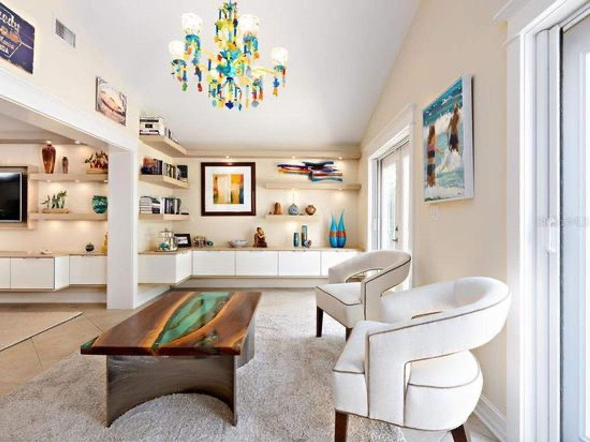
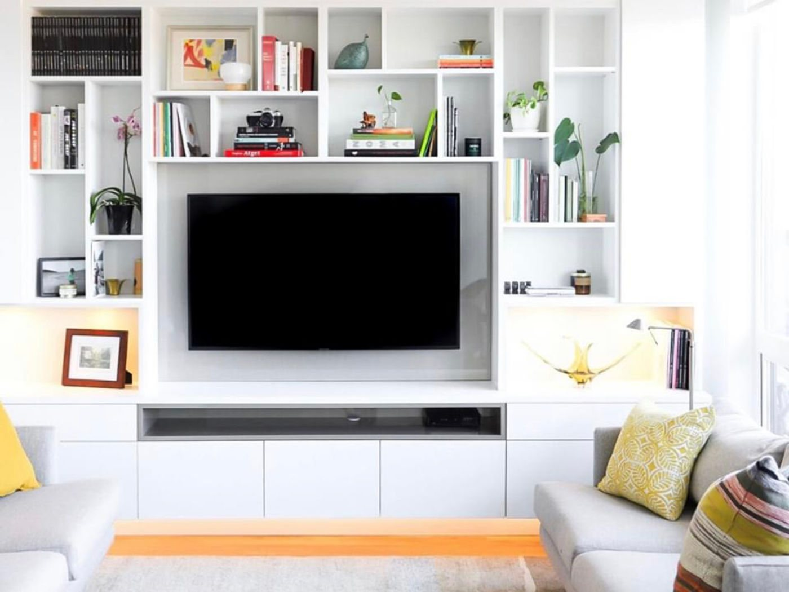
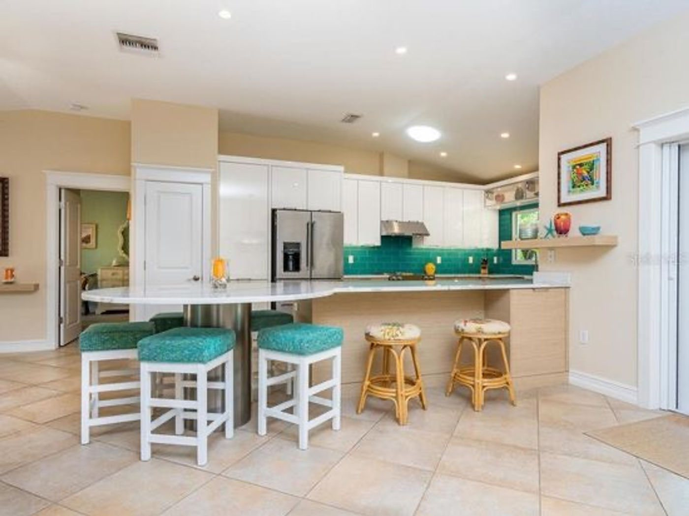
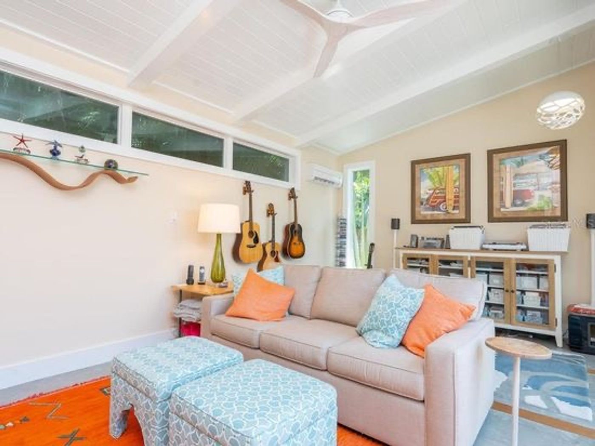
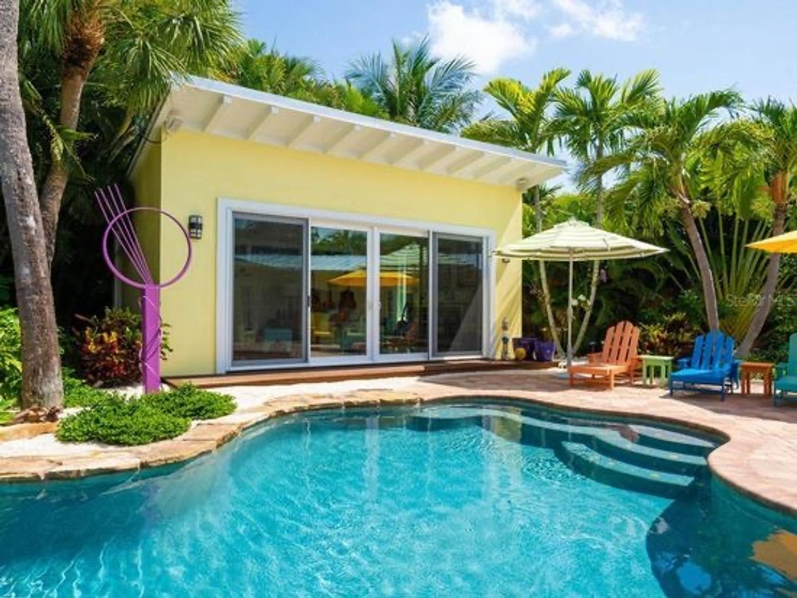
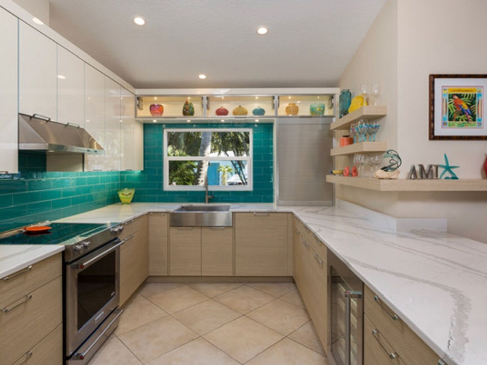

A Gulf-coast beach house that never pretends to be anything else — colour, light, and a plan that pours straight out to the pool.
Sliding walls of glass put the living area and the pool deck in constant conversation. Inside, the palette takes its cues from the water: turquoise tile, glass, and art against clean white cabinetry and pale floors.
Custom built-ins do the quiet work — a media wall, open shelving, and storage that keeps a holiday house from ever looking cluttered. The kitchen centres on a marble island generous enough for a full house of guests.







Tell us about your home and what you're hoping to create — we'd love to hear from you.
Inquire About a Project